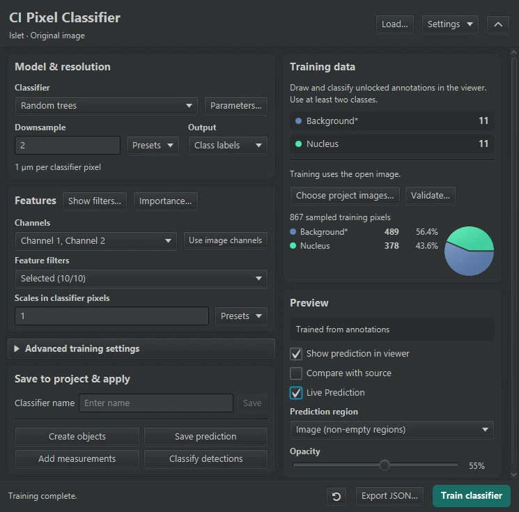

Train while you annotate
Draw unlocked annotations for at least two classes. Use the pixel counts and percentages in Training data to see what the model actually sampled. Enable Live Prediction to retrain as you edit. Collapse the window to make space for the viewer. The checkbox moves into the header and the window keeps its width and position.
The Undo arrow beside Export JSON uses QuPath’s annotation history. On Windows, the shortcut is Ctrl + Z.
